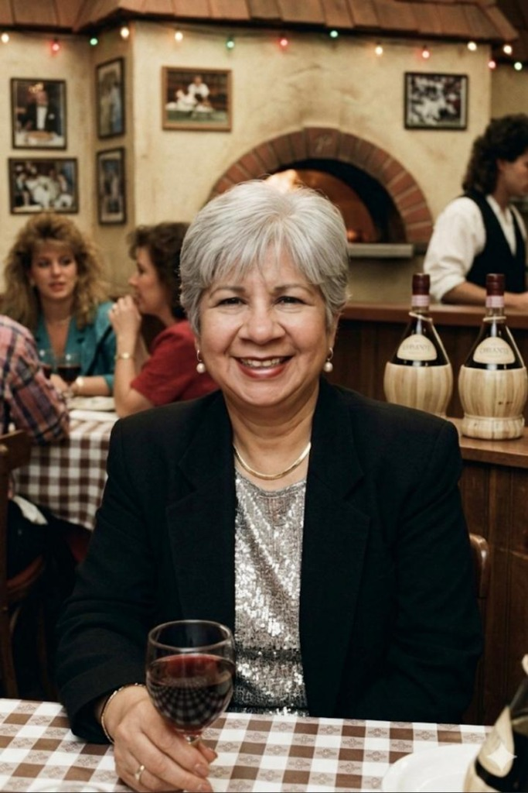

Entrevista

Entrevista con Econ. Malila Silva
Liderazgo Situacional
La Econ. Malila Silva nos enseña a ser "camaleones profesionales" y a cómo adaptar nuestro estilo de guía según las necesidades de cada colaborador.
Leer entrevista